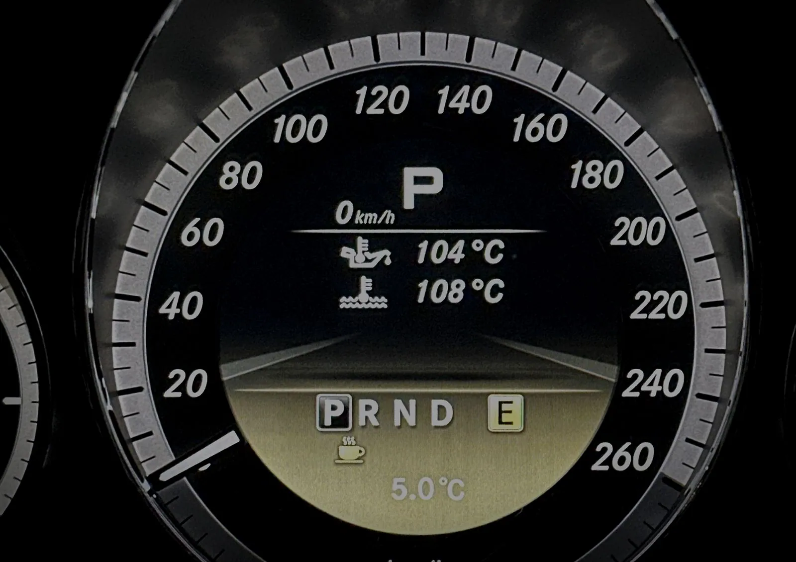
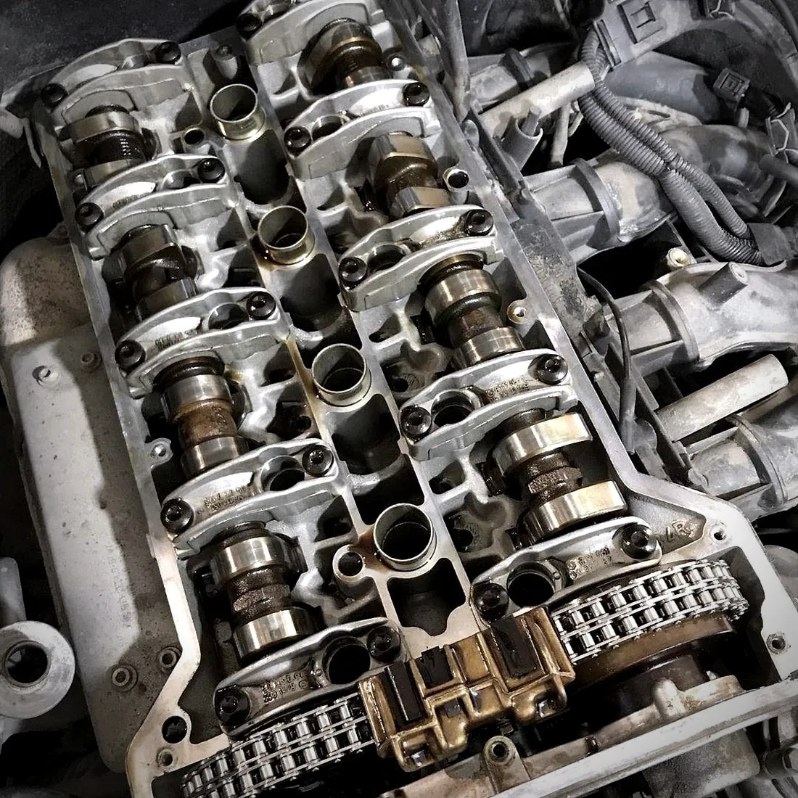
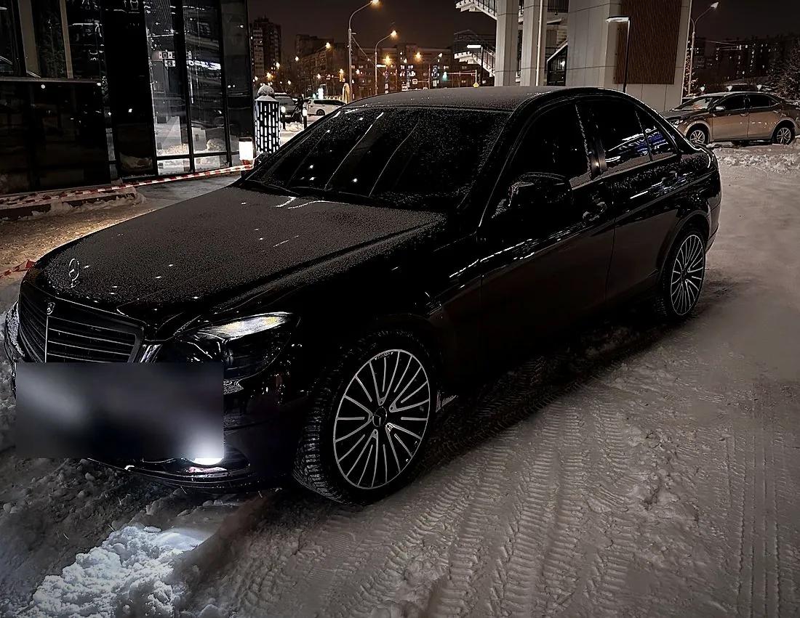
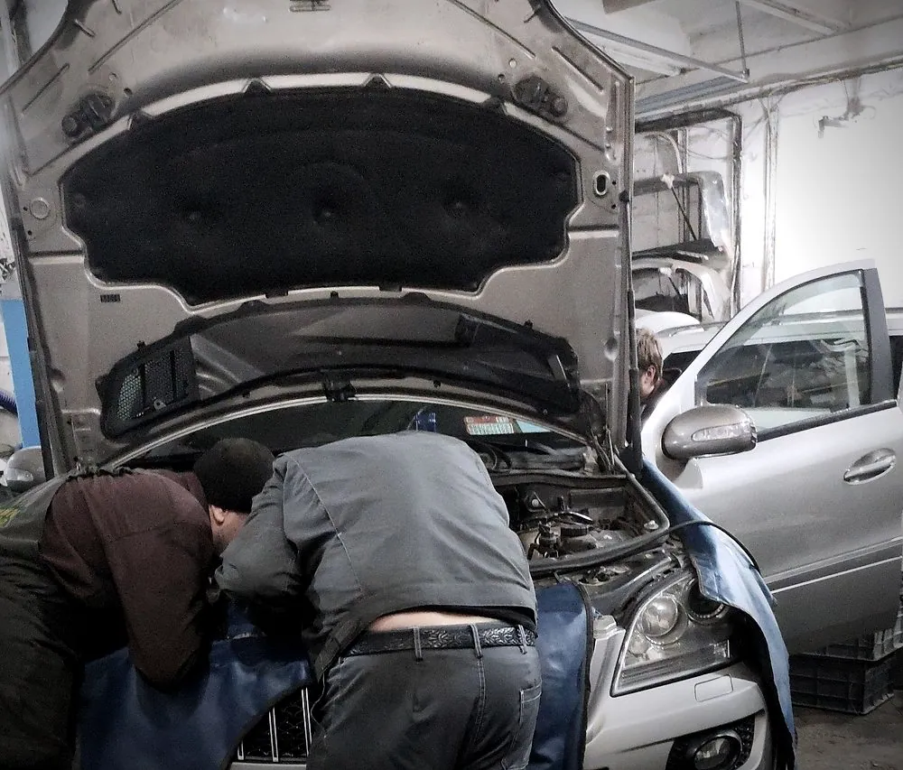
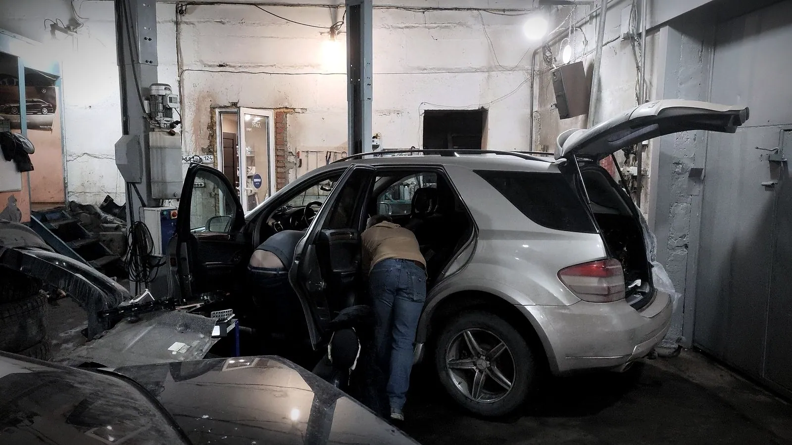

Круче места для ремонта «Мурзилок» нет во всей Сибири! Чинят только Мерседесы, но про них они знают всё и даже больше, чем официалы!

Ремонт Mercedes-Benz · Красноярск
Сервис, который знает Mercedes наизусть.
MB-garage на 26 Бакинских Комиссаров: диагностика, ремонт двигателя и ходовой, ТО — только для Mercedes-Benz. «Лучший автосервис 2025» по премии 2ГИС и 5,0 по 117 оценкам. Свободное время — онлайн, без звонка.
01Цены
Работы и стоимость
Стоимость зависит от модели, года и состояния автомобиля — мастер назовёт её после диагностики. Время в записи — примерное.
- Компьютерная диагностикаГорит «чек», машина странно себя ведёт, посторонние шумыпосле диагностики1 ч
- Ремонт бензиновых двигателейЗажигание, ГРМ, течи маслапосле диагностики4 ч
- Замена масла и ТОПоможем отличить оригинальную запчасть от подделкипосле диагностики1 ч
- Ремонт ходовой частиПодвеска, стуки и скрипыпосле диагностики2 ч
- Консультация и осмотрПодскажем, что делать сейчас, а что может подождатьпосле диагностики30 мин
02Бокс
Фото из нашего бокса




03Почему мы
Почему MB-garage
- 01
Только Mercedes-Benz
Не все марки подряд, а одна — поэтому знают её особенности. «Про них они знают всё», — пишут клиенты.
- 02
Лучший автосервис 2025
Премия 2ГИС. И 5,0 по 117 оценкам — так оценивают те, кто уже у нас был.
- 03
Объясняют по-человечески
Механики идут на контакт и подробно подсказывают, что сделать сейчас, а что подождёт.
- 04
Можно позвонить с дороги
Опишите, что случилось, — подскажем, можно ли доехать до сервиса своим ходом.
04Как это работает
От записи до готовой машины
- Выбираете работу и время
Онлайн, без звонка — свободное время видно сразу.
- Получаете подтверждение
Напомним о записи накануне.
- Приезжаете на 26 Бакинских Комиссаров, 1/423
1 этаж, рядом 2 парковки; остановка «Пос. Технический» — 250 м.
- Диагностика и согласование
Мастер расскажет, что нашёл, и назовёт стоимость — потом ремонт.
05Отзывы
5,0 из 5 — что пишут гости
Был на замене корпуса масляного фильтра, помогли выявить подделку, которую заказал сам. Толковые мастера, механики идут на контакт (редкость в СТО).
Самый лучший сервис, мастера на опыте, всё подробно подскажут, сделают как лучше. Мерседесам сюда!
06Вопросы
Частые вопросы
Какие машины обслуживаете?
Только Mercedes-Benz. На фото из нашего бокса — C, E, S, ML и G-класс.
Сколько стоит ремонт?
Зависит от модели, года и состояния автомобиля. Мастер назовёт стоимость после диагностики.
Когда вы работаете?
С понедельника по пятницу, с 9:00 до 18:00. Суббота и воскресенье — выходные.
Как можно оплатить?
Картой, наличными, переводом, по QR-коду или через банк.
Как вас найти?
Ул. 26 Бакинских Комиссаров, 1/423, 1 этаж (Ленинский район). Остановка «Пос. Технический» — 250 м, рядом 2 парковки.
07Контакты
Как нас найти
- Адрес
- ул. 26 Бакинских Комиссаров, 1/423, Красноярск1 этаж · остановка «Пос. Технический» — 250 м, рядом 2 парковки
- Часы работы
- Пн–Пт09:00–18:00Сб–Всвыходной
- Телефон
- +7 923 295-22-76
ул. 26 Бакинских Комиссаров, 1/423, Красноярск